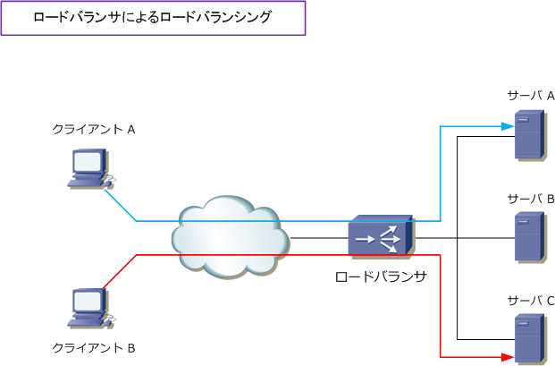
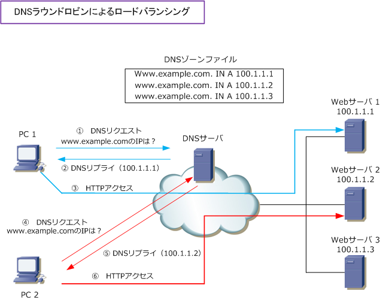

Load Balancing
ロードバラシング（負荷分散）の必要性
インターネット上で公開されているWebサーバは、クライアントPCからのアクセスが集中した時には 大きな負荷がかかります。サーバへの負荷を分散するためには、同じ役割を担うサーバを複数導入して それらの上位に負荷分散装置のロードバランサを導入する必要があります。また、ロードバランサ導入 以外にもDNSラウンドロビンという機能を設定することでサーバの負荷分散を実現することも可能です。 ※ このサーバに対する負荷分散は「ロードバランス」あるいは「ロードバラシング」と呼ばれています。
社内に配置されているサーバの負荷分散はロードバランサを導入して行うのが一般的で、ECサイト等の 公開サーバへの負荷分散は、ロードバランサ導入とDNSラウンドロビンの両方を実装させることが多い。
ロードバランサとは
ロードバランサ（負荷分散装置）とは、クライアントPCからWebサーバなどへのアクセス要求を制御して 同じような機能を持つ複数のサーバに、アクセスを分散して転送する装置のことです。ロードバランサの 負荷分散（ロードバランシグ）により、サーバからの応答速度の遅延を防ぎ、サーバに障害が発生しても システムダウンを回避できます。また、同じクライアントPCからの通信を常に同じサーバに転送できます。

上図では、ロードバランサ配下の1台のサーバにパケットが割り振られるのではなく、ロードバランサにより 複数のサーバに対してパケットが割り振られている様子を示しています。また、同じクライアントからの通信 を常に同じサーバに転送するよう、ロードバランサがPCの送信元IPアドレスを見てパケットを転送しています。
DNSラウンドロビンとは
DNSラウンドロビンとは、1つのドメイン名に複数のIPアドレスを割り当てて、クライアントPCなどからの 問い合わせごとに順番に応答していく負荷分散技術です。このDNSラウンドロビンはECサイトなどの外部 公開されている Web サーバの負荷分散に使用することが一般的であり、このDNSラウンドロビンの設定は 外部公開しているDNSサーバ、あるいは、契約しているISP回線業者のDNSサーバで行うのが一般的です。
下図は「www.example.com」へのWebアクセスを分散させるために、ISPのDNSサーバのゾーンファイル には、www.example.com のホスト名に対する Aレコード を3行設定します。同じホスト名のAレコードが 複数ある場合、DNSサーバは設定したIPアドレスを順番（ラウンドロビン）に応答するので負荷分散できます。

| 項番 | 説明 |
|---|---|
| ① | クライアントPC1 が、ISPのDNSサーバに「www.example.com」のDNSリクエストを送信。 |
| ② | DNSサーバが、www.example.comのIPアドレス「100.1.1.1」のDNSリプライを送信。 |
| ③ | クライアントPC1 は、100.1.1.1 にHTTP接続を行う。 |
| ④ | クライアントPC2 が、ISPのDNSサーバに「www.example.com」のDNSリクエストを送信。 |
| ⑤ | DNSサーバが、www.example.comのIPアドレス「100.1.1.2」のDNSリプライを送信 |
| ⑥ | クライアントPC2は、100.1.1.2 にHTTP接続を行う。 |
DNSラウンドロビンは「DNSサーバのゾーンファイルの設定のみで導入できる、ロードバランサ等の専用装置 不要による低コストでの負荷分散の実現」のメリットがあります。一方、クライアントからのDNSリクエストに AレコードのIPアドレスを順番に返すだけなので「効率的な負荷分散ができない」、「接続毎に接続先が違うと 通信の継続性が求めるHTTP通信の場合には問題が起きる」などのデメリットがあります。また、サーバ障害を 検知をすることができなく、障害が発生しているサーバにもラウンドロビンにパケットを転送してしまいます。
◇ DNSラウンドロビンのメリット ⇒ DNSサーバのゾーンファイルの設定のみで容易に負荷分散を実現。 ⇒ ロードバランサ等の高価な専用装置なしでも負荷分散を実現。
◇ DNSラウンドロビンのデメリット ⇒ ロードバランサのように効率的な負荷分散は実現できない。 ⇒ 同じクライアントからの通信を常に同じサーバに転送する、という通信の継続性を実現できない。 ⇒ サーバの障害を検知できず、障害が起きているサーバにもパケットを転送してしまう。 ※ DNSラウンドロビンを設定したDNSサーバ側で障害が発生したサーバのAレコードを削除する必要がある。
DNSラウンドロビンにはサーバ負荷分散でこのようないくつかのデメリットがありますが、インターネット上 の公開サーバに対する負荷分散としてはとても有効な手段です。従って、例えばECサイトのWebサーバ等は DNSラウンドロビンの機能とロードバランサ導入の両方を行うことで、DNSラウンドロビンの問題点を解決。